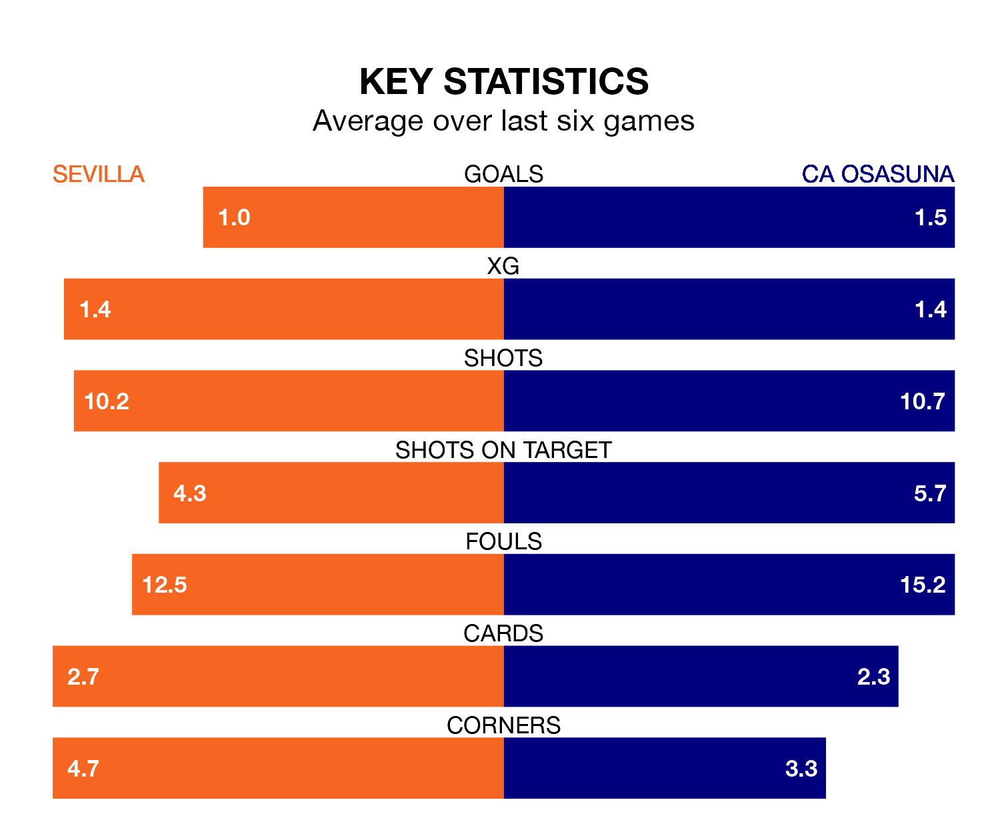

Sevilla welcome CA Osasuna to the Estadio Ramón Sánchez Pizjuán on late Sunday looking to pick up points to end their four-game losing streak.
Sevilla's struggles have left them with just three points from their last six La Liga matches, while their opponents have earned 11 from a possible 18.
In the last 10 years, Sevilla and Osasuna have played each other on 13 occasions. Sevilla won seven of them, Osasuna three, and they drew three times.
On average, Sevilla scored 1.8 goals and Osasuna 1.1 in those matches.
Their last meeting was on September 23, when they played out a 0-0 draw.
Sevilla are 17th in the table after 21 games, of which they have won three and drawn seven, earning 16 points.
Osasuna are six places ahead of the hosts in 11th, with seven wins and four draws putting them on 25 points.
With 26 goals in 21 games so far this season, Sevilla are scoring at below the league average rate with 1.2 goals per game. And they are conceding more than average, letting in 35 goals at a rate of 1.7 per game.
The away team are also below average scorers, with 1.2 goals per game, compared to a league average of 1.3. They have conceded 1.6 goals per game.
In Ante Budimir, Osasuna have one of the league's most on-form strikers so far this season. He has notched nine goals in 20 appearances, to sit sixth in the scoring charts.
His goal rate of one every 164 minutes is quicker than that of Youssef En-Nesyri, Sevilla's top scorer with a goal every 238 minutes, and a total of five goals in 17 games.
Sevilla's last match was on Sunday, a 5-1 loss against Girona, with Isaac Romero Bernal getting the goal for Sevilla.
Osasuna beat Getafe CF 3-2 last time out, also on January 21, with Iker Muñoz, Jesús Areso and Raúl García de Haro on the scoresheet.
Updated: 09:07 (UTC), 24/01/24